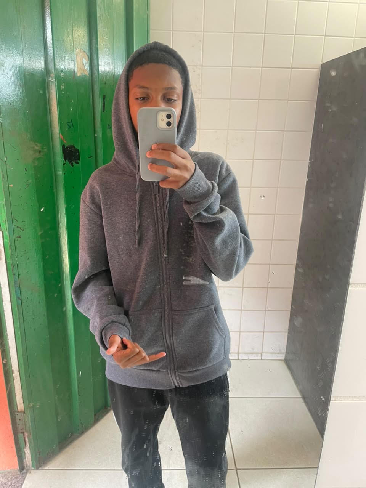

Minha História
Conheça minha trajetória, meus sonhos e os meus objetivos.
Samuel "Pelezin": Do campo de terra ao sonho de inspirar gerações
Samuel, conhecido por todos em sua comunidade como Pelezin, nasceu cercado por desafios, mas também por uma determinação que parecia maior do que qualquer obstáculo. Desde muito pequeno, carregava dentro de si um sonho que muitos consideravam impossível: tornar-se jogador profissional de futebol e conhecer seu maior ídolo, Neymar Jr.
Enquanto outras crianças apenas brincavam com a bola, Samuel enxergava cada partida como um passo em direção ao seu futuro. Crescendo em meio às dificuldades, enfrentou a falta de recursos, treinou em campos de terra e muitas vezes precisou lidar com a ausência de equipamentos adequados. Mesmo assim, nunca permitiu que as limitações definissem seus objetivos.
O futebol se tornou sua paixão e sua escola de vida. Cada treino representava uma oportunidade de evoluir, cada derrota trazia uma lição e cada queda fortalecia ainda mais sua vontade de vencer. Inspirado pela trajetória de Neymar, Samuel estudava seus jogos, seus dribles e sua história de superação. Mais do que admirar um craque, ele encontrava inspiração em alguém que também havia transformado sonhos em realidade.
Durante sua adolescência, enfrentou inúmeras dificuldades. Recebeu negativas em avaliações, conseguiu superar derrotas dolorosas e ouviu críticas de pessoas que não acreditavam em seu potencial. Muitos diziam que seu sonho era grande demais para alguém vindo de uma realidade tão simples. No entanto, Samuel escolheu continuar.
Sua persistência começou a dar resultados quando surgiu a oportunidade de realizar um teste no Centro de Treinamento do Santos Futebol Clube. Para ele, aquele momento representava muito mais do que uma simples avaliação. Era a chance de provar que todo esforço tinha valido a pena.
Determinando-se a aproveitar cada segundo, treinou com intensidade máxima, demonstrando velocidade, habilidade e dedicação. Seu desempenho chamou a atenção da comissão técnica, que passou a enxergar naquele jovem uma promessa para o futuro.
Foi durante esse período que aconteceu um dos momentos mais marcantes de sua vida. Durante um treinamento, Samuel teve a oportunidade de conhecer pessoalmente seu maior ídolo, Neymar. A experiência foi inesquecível. Mais do que um encontro, tornou-se uma fonte de motivação que fortaleceu ainda mais sua confiança e sua determinação em seguir lutando pelos seus objetivos.
A partir daquele momento, sua história começou a ganhar visibilidade. Em sua comunidade, crianças passaram a vê-lo como exemplo de perseverança. Seu nome começou a circular em competições de base, redes sociais e entre pessoas ligadas ao futebol.
Mas o crescimento trouxe também novas responsabilidades. Samuel compreendeu que o talento sozinho não seria suficiente para alcançar o sucesso. Passou a dedicar-se ainda mais à preparação física, ao treinamento técnico e ao fortalecimento mental. Aprendeu que o futebol profissional exige disciplina, constância e capacidade de superar adversidades diariamente.
Seu momento de maior destaque veio durante uma importante final de campeonato das categorias de base. Com sua equipe atrás no placar e o tempo se esgotando, assumiu a responsabilidade em campo. Em uma jogada decisiva, avançou pelo meio, driblou adversários e marcou um gol memorável. A torcida explodiu em comemoração, gritando seu apelido: "Pelezin".
Aquele instante simbolizou muito mais do que uma vitória esportiva. Representou a confirmação de que o garoto do campo de terra estava transformando seus sonhos em realidade. Com o passar dos anos, Samuel amadureceu não apenas como atleta, mas também como ser humano. Aprendeu que a fama é passageira, mas os valores permanecem. Descobriu que o verdadeiro sucesso acontece longe dos holofotes, sendo construído através do caráter, da humildade e do trabalho diário.
Mesmo diante da pressão, das críticas e das expectativas, nunca esqueceu suas origens. Continuou sendo o mesmo menino simples que sonhava olhando para um campo de terra. A diferença é que agora carregava consigo a responsabilidade de inspirar outras pessoas.
Para Samuel, o futebol sempre foi mais do que um esporte. Foi uma ferramenta de transformação. Uma ponte entre seus sonhos e a realidade. Um caminho para mostrar que ninguém está condenado pelas circunstâncias em que nasceu.
Sua trajetória tornou-se um exemplo de perseverança para jovens que enfrentam dificuldades semelhantes. Através de sua história, ele procura transmitir uma mensagem simples, mas poderosa: a origem não define o destino.
Hoje, Samuel continua escrevendo sua história. Ainda existem títulos para conquistar, desafios para superar e sonhos para realizar. No entanto, independentemente de onde o futebol o leve, ele sabe exatamente quem é.
Ele é Samuel. O garoto que acreditou quando ninguém acreditava. O menino do campo de terra. O jovem que transformou dificuldades em combustível. O atleta que descobriu que a maior vitória não está apenas dentro de campo, mas na capacidade de inspirar vidas. Sua jornada prova que sonhos verdadeiros não sobrevivem porque são fáceis. Eles sobrevivem porque existe alguém disposto a lutar por eles todos os dias.
E essa ainda é apenas uma parte da história de Pelezin. Com o passar dos anos, Samuel continuou evoluindo dentro e fora de campo. As oportunidades que surgiram foram resultado de muito trabalho, disciplina e dedicação. Cada treino, cada jogo e cada desafio ajudaram a construir o atleta e a pessoa que ele se tornou.
Seu nome passou a ser reconhecido em diferentes lugares, mas ele nunca perdeu de vista aquilo que o trouxe até ali: a vontade de vencer e o compromisso com seus objetivos. Mesmo diante de novas responsabilidades, manteve os pés no chão e continuou trabalhando para alcançar níveis cada vez maiores no futebol.
Mais do que conquistar espaço no esporte, Samuel tornou-se uma referência para muitos jovens que compartilham uma realidade parecida com a sua. Sua trajetória mostrou que talento é importante, mas que esforço, disciplina e perseverança fazem a diferença ao longo do caminho.
Hoje, conhecido como Pelezin, ele segue escrevendo sua história. Ainda existem metas a alcançar, títulos para disputar e sonhos para realizar. Mas uma coisa já é certa: o garoto que começou em um campo de terra provou que a origem não determina o destino. Samuel não ficou conhecido apenas pelos gols ou pelas vitórias. Ficou conhecido pela forma como enfrentou os desafios e transformou oportunidades em resultados.
Sua história é a prova de que grandes conquistas não acontecem por acaso. Elas são construídas diariamente, com trabalho, dedicação e coragem para continuar quando o caminho parece difícil. E assim segue a trajetória de Samuel "Pelezin": um jovem que acreditou no próprio sonho, trabalhou para torná-lo realidade e continua construindo seu futuro dentro do futebol.
Capítulo Final — O Legado de Pelezin
Depois de anos de dedicação, Samuel já não era visto apenas como uma promessa. Seu nome havia conquistado respeito dentro do futebol. O apelido Pelezin, que começou como uma brincadeira entre amigos da comunidade, agora era conhecido em diferentes lugares. A caminhada, porém, estava longe de ser fácil. Quanto mais alto ele chegava, maiores eram as cobranças e novos objetivos surgiam.
Em cada competição, Samuel carregava consigo as lembranças de sua infância. Lembrava do campo de terra, dos dias difíceis e de todas as vezes em que ouviu que não conseguiria. Essas lembranças não o deixavam triste; pelo contrário, serviam como combustível para lembrar de onde veio e manter sua humildade.
Sua família continuava sendo sua maior motivação. Mesmo com a rotina corrida, fazia questão de permanecer próximo das pessoas que estiveram ao seu lado desde o começo. Nunca esqueceu quem o ajudou quando ainda não tinha nada. Esse foi um dos motivos pelos quais conquistou o respeito de tanta gente, não apenas pelo jogador, mas pela pessoa.
Com o tempo, Samuel percebeu que sua história ultrapassava os limites do futebol. Muitos jovens começaram a acompanhar sua trajetória e encontravam esperança em sua caminhada. Ele passou a visitar projetos sociais, conversar com crianças e participar de eventos esportivos para compartilhar experiências e mostrar que sonhos podem ser perseguidos de forma séria e responsável.
Em uma dessas visitas, um menino segurando uma bola velha nas mãos perguntou: "Pelezin, você acha que eu consigo?". Samuel sorriu, lembrou de si mesmo e respondeu: "Consegue, mas precisa trabalhar para isso todos os dias." O menino sorriu, e Samuel percebeu que aquela simples conversa valia tanto quanto muitas vitórias, porque o futebol lhe deu oportunidades, mas inspirar pessoas lhe deu propósito.
Os anos continuaram passando. Vieram novas conquistas, novos títulos, mas também derrotas, lesões e erros. Ele aceitou tudo isso como parte da jornada. Samuel entendeu que ninguém vence o tempo inteiro e que os grandes profissionais são aqueles que aprendem com cada falha. Essa mentalidade o ajudou a permanecer firme através da consistência.
Anos depois, ao olhar para trás, o garoto do campo de terra agora vivia aquilo que um dia parecia impossível, mas continuava valorizando suas raízes e respeitando sua história. Em entrevistas, quando perguntavam qual havia sido sua maior conquista, ele dizia: "Minha maior conquista foi nunca ter desistido." Sua história foi construída por milhares de pequenas decisões de continuar, insistir e acreditar.
Sempre que passava pelo velho campo de terra de sua antiga comunidade, parava por alguns minutos para observar as crianças correndo e sonhando. Ali tudo havia começado. Sua trajetória jamais seria perfeita, mas era verdadeira. A verdade estava nas horas de treino, nos sacrifícios e na disciplina longe dos holofotes.
O menino que começou correndo atrás de uma bola em um campo de terra nunca desapareceu; ele apenas cresceu, aprendeu e evoluiu, carregando os mesmos valores de respeito, humildade, determinação e gratidão. Ele provou que sonhos não se realizam apenas porque existem, mas porque existe coragem para persegui-los diariamente.
FIM